The primary objective of this project is to understand and simulate the reconnaissance phase of ethical hacking by performing controlled network scanning and traffic analysis in a lab environment.
This project aims to:
To begin the lab, you need to install and configure two virtual machines in VMware or VirtualBox:
Network Configuration:
In your virtualization software, go to:
VM → Settings → Network
Select one of the following network modes:
Ensure that both virtual machines are connected to the same network so they can communicate with each other.
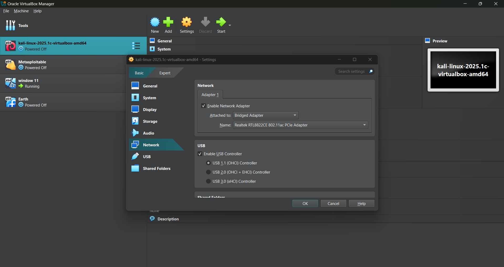
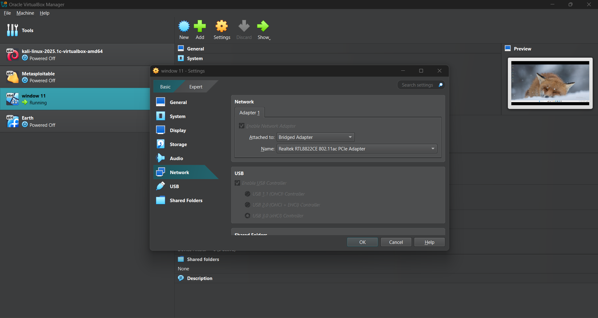
Start both the Kali Linux machine and the Windows machine by clicking the Start button in your virtualization software.
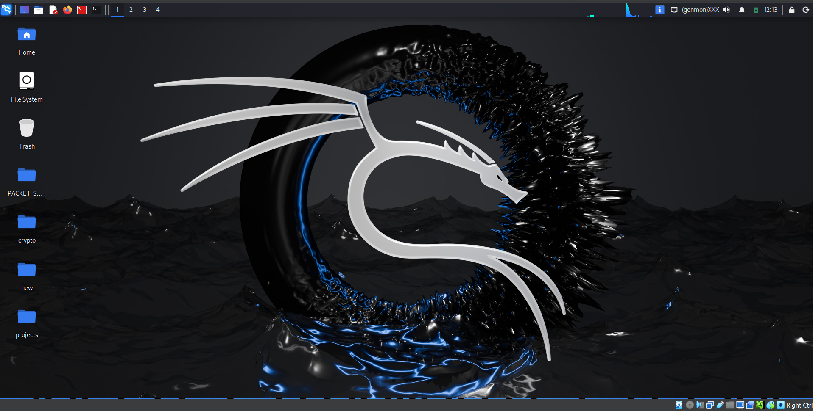
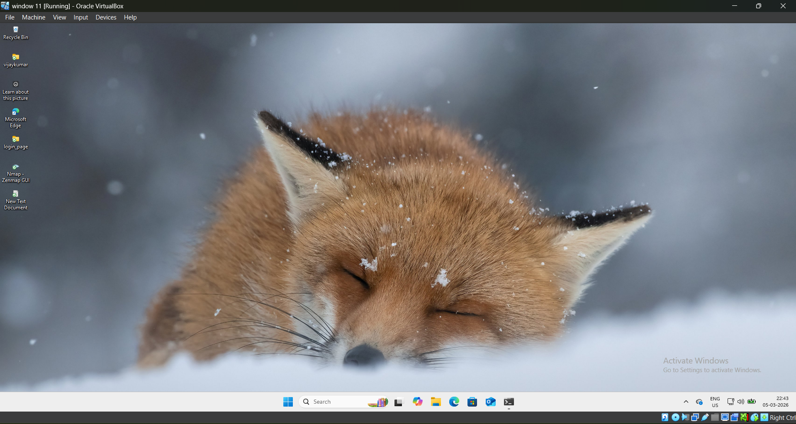
In this step, identify the IP addresses of both the Kali Linux machine and the Windows machine. Ensure both are in the same network.
Open the terminal and run the following command:
ifconfig
Look for an entry like:
inet 192.168.143.137/24
Kali IP Address: 192.168.143.137
Open Command Prompt and run:
ipconfig
Look for:
IPv4 Address . . . . . . . . . . : 192.168.191.60
Make sure both IP addresses belong to the same network range (e.g., 192.168.x.x).
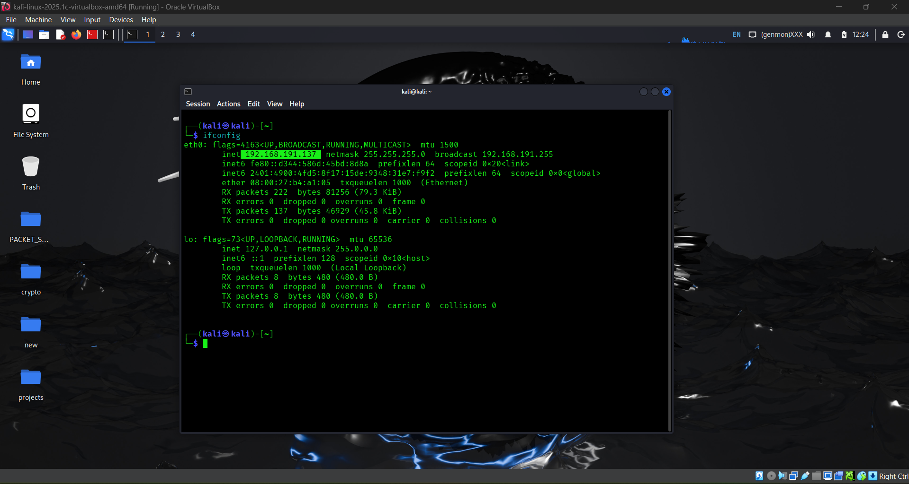
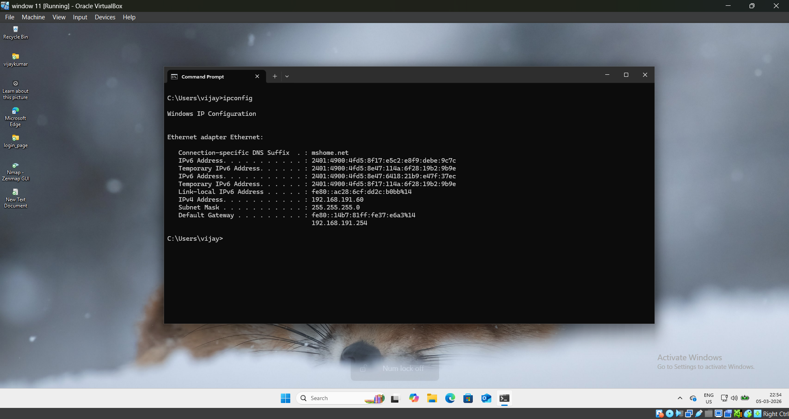
To perform scanning, we need open ports on the target system. In this step, we will start essential services on the Kali Linux machine.
Run the following commands:
sudo service ssh start
sudo service ssh status
Default Port: 22
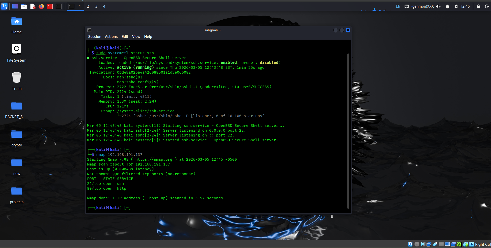
Run the following command:
sudo service apache2 start
Default Port: 80
Test in browser:
http://<Kali-IP>
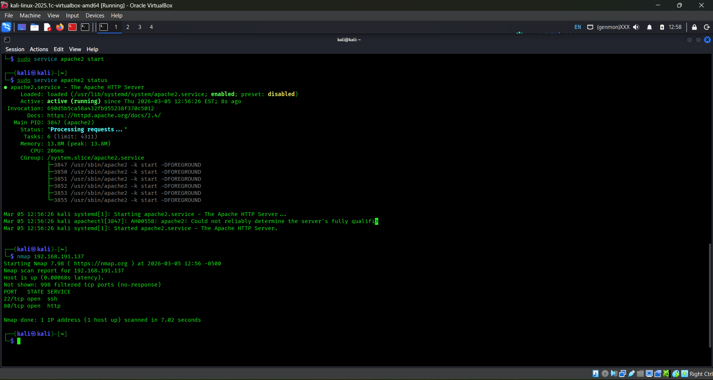
Run the following commands:
sudo service vsftpd start
sudo service vsftpd status
If the command does not work, run:
sudo apt update && sudo apt upgrade
Default Port: 21
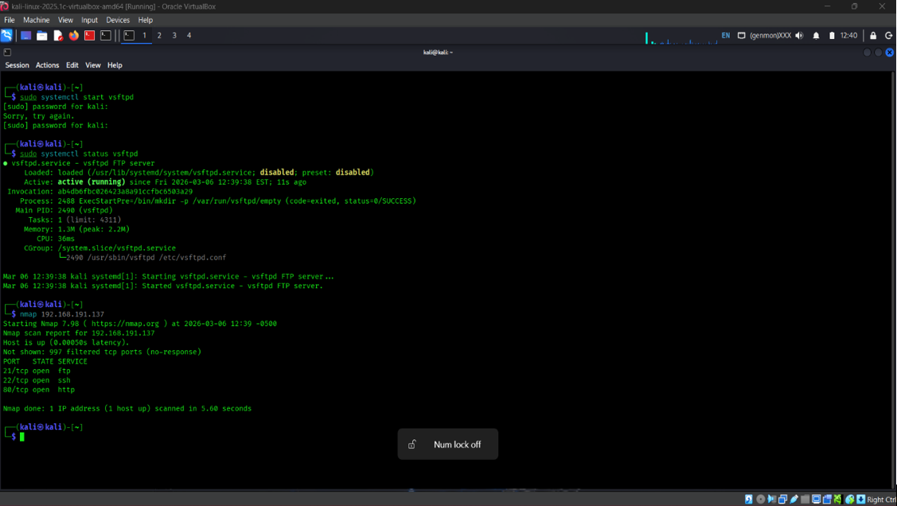
After completing the above steps, the Kali machine will have the following active services:
| Service | Port |
|---|---|
| SSH | 22 |
| HTTP | 80 |
| FTP | 21 |
These three services are now running and ready for scanning as per the project requirements.
In this step, install Nmap on the Windows machine, which will act as the attacker system.
Visit the official website:
https://nmap.org
Run the installer and follow the default installation steps.
Open Command Prompt and run:
nmap --version
If the version details are displayed, Nmap has been installed successfully.
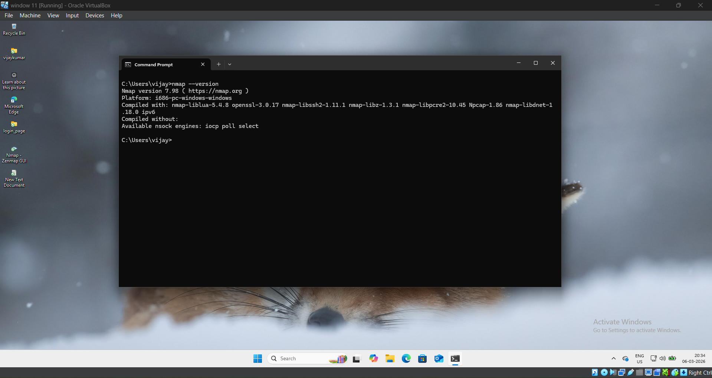
In this step, Wireshark is used on the Kali Linux machine to capture and analyze network traffic generated during scanning.
sudo wireshark
Choose the active network interface, usually:
eth0
Click on Start Capturing to begin monitoring network traffic.
Wireshark will now capture incoming scan traffic from the attacker machine.
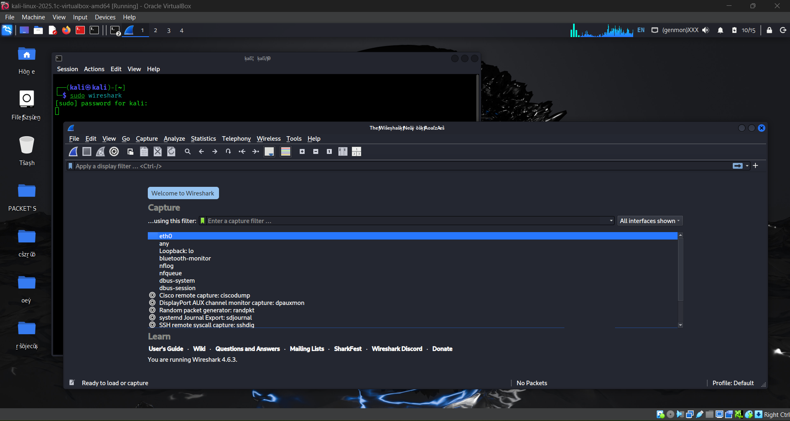
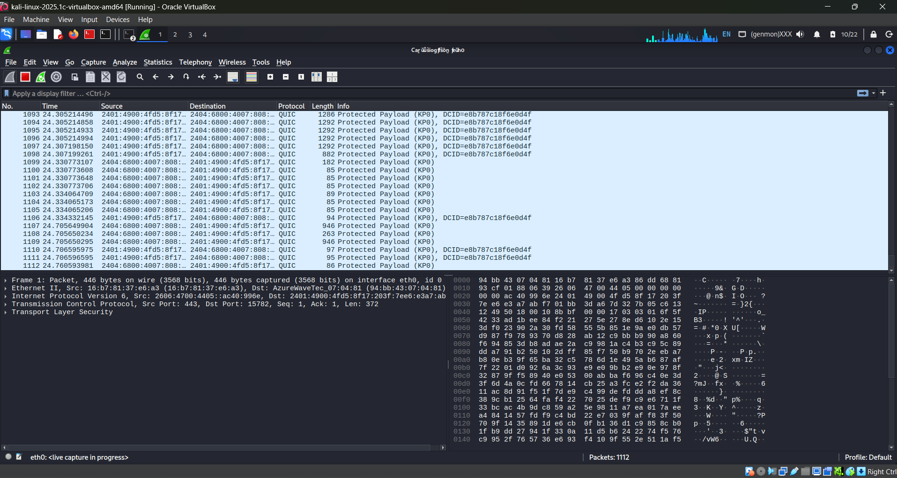
Open Command Prompt on the Windows (attacker) machine and run the following Nmap commands to scan the target (Kali machine).
nmap 192.168.143.137
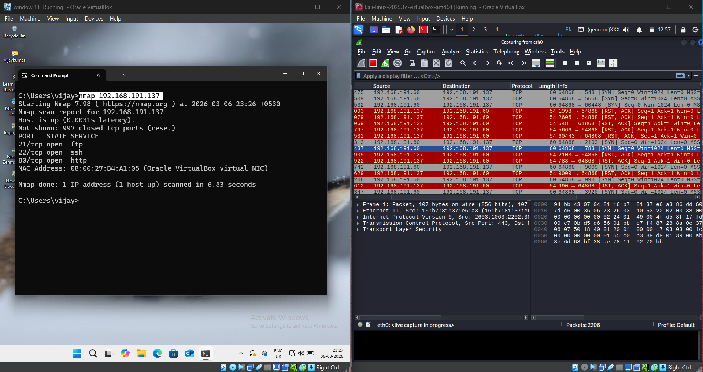
nmap -sV 192.168.143.137
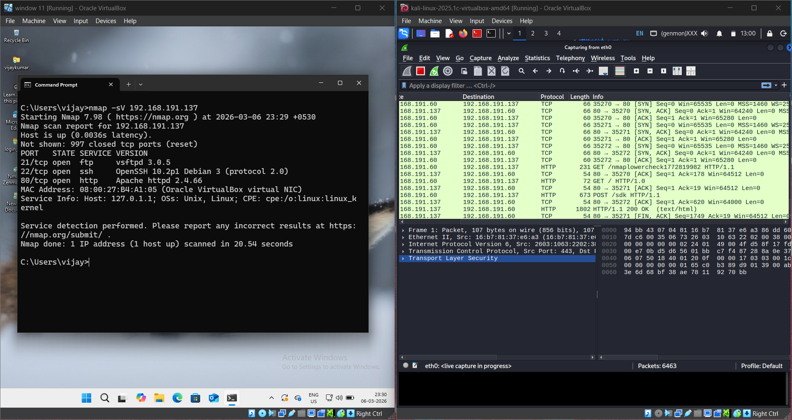
nmap -O 192.168.143.137
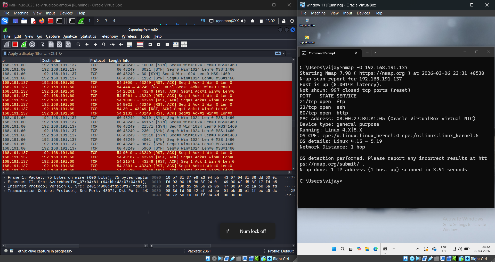
nmap -A 192.168.143.137
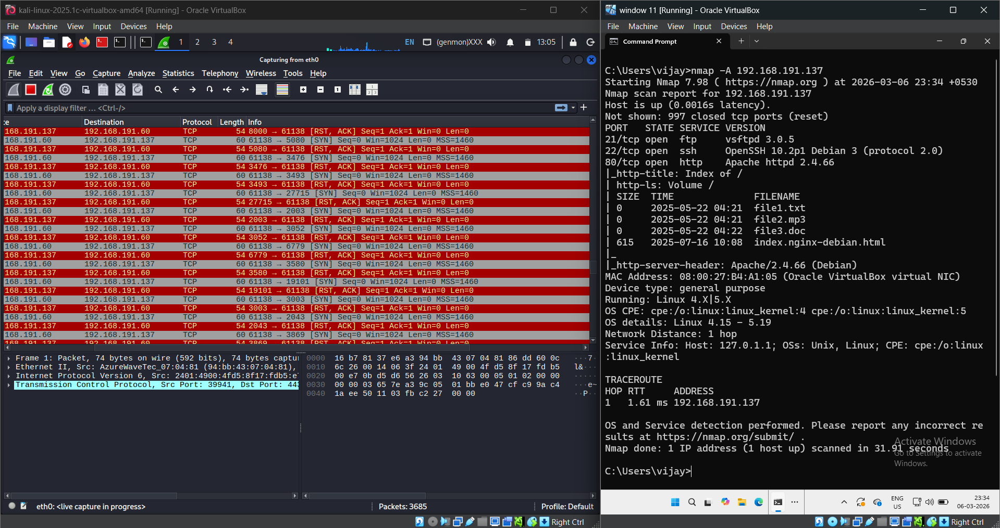
Go back to the Kali machine where Wireshark is running. You will observe different types of packets generated during the scan:
Useful Filters:
Show only SYN packets:
tcp.flags.syn == 1 && tcp.flags.ack == 0
Other filters:
tcp.flags.ack == 0
tcp.flags.syn == 1
Filter by Windows (attacker) IP:
ip.addr == <Windows-IP>
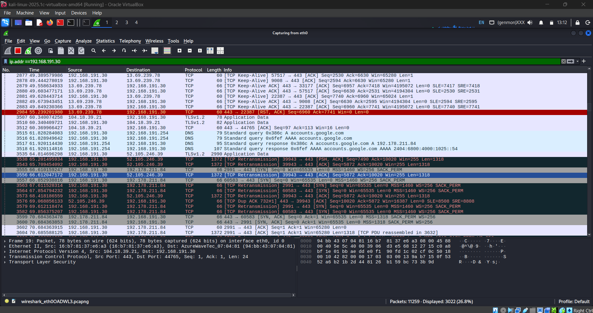
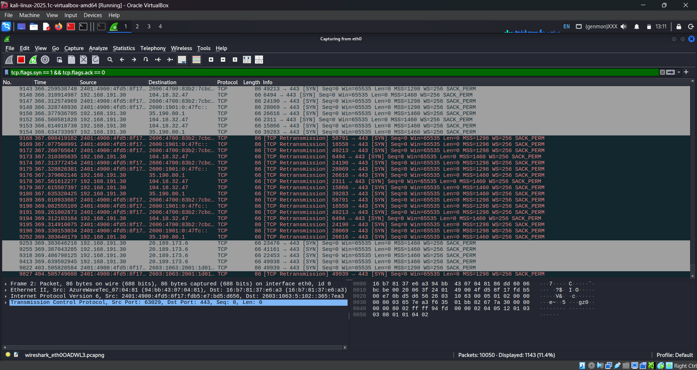
Based on the Nmap scan results, identify open ports and running services, then map them to potential security threats.
Example Output:
22/tcp open ssh OpenSSH 9.2
80/tcp open http Apache 2.4.57
21/tcp open ftp vsftpd 3.0.3
Threat Mapping:
Summary Table:
| Port | Service | Possible Threat | Description |
|---|---|---|---|
| 21 | FTP | Anonymous Login | Attackers may access files without authentication |
| 22 | SSH | Brute Force Attack | Attackers may attempt password guessing |
| 80 | HTTP | Web Vulnerabilities | May be vulnerable to XSS, SQL Injection, etc. |